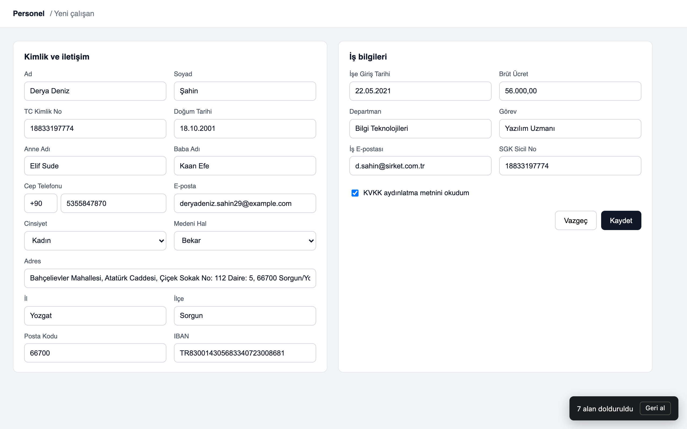
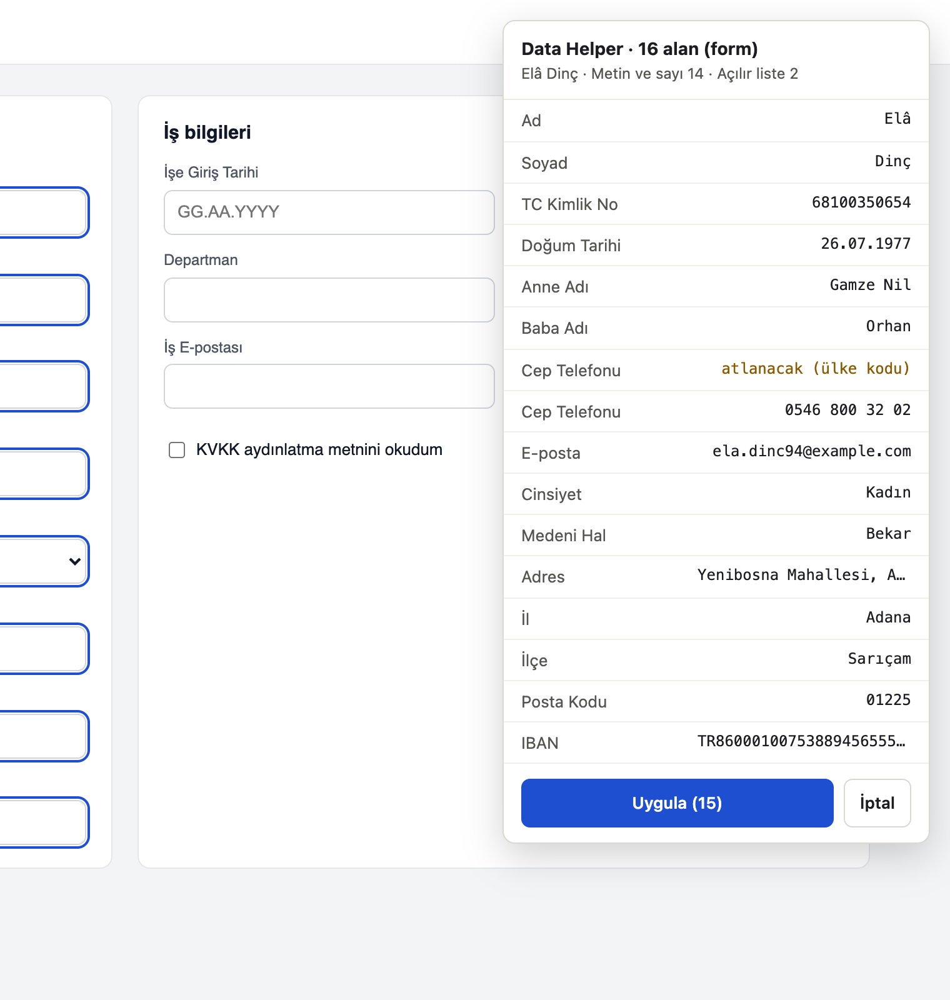
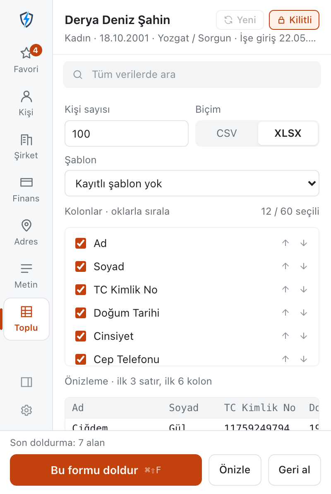

Chrome extension · v2.0.0 · free and open sourceChrome uzantısı · v2.0.0 · ücretsiz ve açık kaynak
Fill the whole form with one consistent person.
Tüm formu tek tutarlı kişiyle doldurun.
Valid TCKN, VKN and IBAN. City, district, postal code and area code that match. A birth date, a hire date and a leave date where each belongs. Typed into the form you clicked, with preview and undo.
Geçerli TCKN, VKN ve IBAN. Birbirini tutan il, ilçe, posta kodu ve alan kodu. Doğum, işe giriş ve izin tarihi kendi alanına. Tıkladığınız forma yazılır; önizleme ve geri alma var.
Click into a form and press Ctrl+Shift+F. Data Helper fills that form only and leaves the rest of the page alone.
Bir forma tıklayın ve Ctrl+Shift+F'ye basın. Data Helper yalnızca o formu doldurur, sayfanın geri kalanına dokunmaz.

Recognises the field
Alanı tanır
Reads the label, legend, aria-label and placeholder, in Turkish or English. Mother's name, father's name and the company name each get their own value.
Etiketi, legend'ı, aria-label'ı ve placeholder'ı okur; Türkçe ya da İngilizce. Anne adı, baba adı ve şirket adı ayrı ayrı doldurulur.
Real dropdowns
Gerçek açılır listeler
Native selects, react-select, MUI Autocomplete and AntD Select: the list is opened and a real option is chosen, so dependent lists like city → district work.
Native select, react-select, MUI Autocomplete ve AntD Select: liste açılır ve gerçek bir seçenek seçilir; il → ilçe gibi bağlı listeler çalışır.
Masks and dates
Maskeler ve tarihler
Masked inputs are typed one character at a time and a separate +90 box is skipped. The date format is taken from the field: DD.MM.YYYY, DD/MM/YYYY or ISO.
Maskeli alanlara harf harf yazılır, ayrı +90 kutusu atlanır. Tarih biçimi alandan alınır: GG.AA.YYYY, GG/AA/YYYY ya da ISO.
Everything else
Geri kalan her şey
Checkboxes, radio buttons, time inputs and same-origin iframes. File, read-only and disabled fields are skipped.
Onay kutusu, radyo düğmesi, saat alanı ve aynı kaynaklı iframe'ler. Dosya, salt okunur ve devre dışı alanlar atlanır.
See it before it is typed. Undo it after.
Yazılmadan önce görün, sonra geri alın.
The preview lists every field Data Helper found and the value it will write. Fields it will skip are marked.
Önizleme, bulunan her alanı ve yazılacak değeri listeler. Atlanacak alanlar işaretlidir.
Checked after filling
Doldurduktan sonra kontrol
Each field is read back. A value the page did not accept is reported, not hidden.
Her alan yeniden okunur. Sayfanın kabul etmediği bir değer gizlenmez, bildirilir.
Undo
Geri al
One click puts the previous values back.
Tek tıkla eski değerler geri gelir.
Lock the person
Kişiyi kilitleyin
Keep the same person across several forms and pages, or press Refresh for a new one.
Aynı kişiyi birden çok form ve sayfada kullanın ya da Yenile ile yeni kişi üretin.

Right-click any field.
Herhangi bir alana sağ tıklayın.
Fill one field, fill the form, insert a specific value or pick an option from a list. The menu is in Turkish, like the rest of the extension.
Tek alanı ya da formu doldurun, belirli bir değer ekleyin veya listeden seçenek seçin.
Alt+Shift+F
Fills the field that has focus.
Odaktaki alanı doldurur.
Ctrl+Shift+F
Fills the form that has focus. On a Mac, ⌘+⇧+F.
Odaktaki formu doldurur. Mac'te ⌘+⇧+F.
Ctrl+Shift+D
Opens the popup. Shortcuts can be changed at chrome://extensions/shortcuts.
Every number follows its real format and check-digit rule, and the values of one person agree with each other. Over 60 data types in four groups, with search and favorites.
Her numara gerçek biçimine ve sağlama kuralına uyar; bir kişinin değerleri birbiriyle tutarlıdır. Dört grupta 60'tan fazla veri türü; arama ve favorilerle.
FieldAlan
FormatBiçim
RuleKural
TC Kimlik No
11 digitshane
10th and 11th digit checksums10. ve 11. hane sağlaması
Yabancı Kimlik No
11 digitshane, 99…
same checksum, starts with 99aynı sağlama, 99 ile başlar
Vergi Kimlik No
10 digitshane
official check digitresmi kontrol hanesi
MERSİS No
16 digitshane
0 + VKN + 5
IBAN
TR + 24 = 26
mod 97, real bank code, reserved 0mod 97, gerçek banka kodu, rezerv 0
SGK İşyeri Sicili
26 digitshane
sector code from NACE, city code of the workplaceişkolu NACE'den, il kodu işyerinden
Cep telefonu
05xx xxx xx xx
real operator prefixesgerçek operatör önekleri
Sabit hat
0xxx xxx xx xx
area code of the person's city, all 81 citieskişinin ilinin alan kodu, 81 il
Posta kodu, plaka
5 digitshane · 34 ABC 123
start with the city code; legal plate lettersil koduyla başlar; geçerli plaka harfleri
Brüt ücret
35.000,00
at least the 2026 gross minimum wage (33.030,00)en az 2026 brüt asgari ücret (33.030,00)
Kart no
16 digitshane
Luhn
DatesTarihler
the field's formatalanın biçimi
hired after 18, left after hiring and before today, leave end after start18 yaşından sonra işe giriş, çıkış girişten sonra ve bugünden önce, izin bitişi başlangıçtan sonra
Numbers are generated, not real. District postal codes are representative.
Numaralar üretilir, gerçek değildir. İlçe posta kodları temsilidir.
A hundred people in a spreadsheet.
Yüz kişi, tek tabloda.
For bulk import screens: generate any number of people as CSV or XLSX, with the columns you choose, in the order you choose.
Toplu aktarım ekranları için: istediğiniz sayıda kişiyi, seçtiğiniz kolonlarla ve sırayla CSV ya da XLSX olarak üretin.
Opens in Excel
Excel'de açılır
CSV is UTF-8 with a BOM and semicolons, so Turkish Excel reads it correctly. XLSX is a real workbook.
CSV, BOM'lu UTF-8 ve noktalı virgüllüdür; Türkçe Excel doğru okur. XLSX gerçek bir çalışma kitabıdır.
Saved templates
Kayıtlı şablonlar
Save a column layout once and use it for every import.
Kolon düzenini bir kez kaydedin, her aktarımda kullanın.

Nothing leaves your browser.
Tarayıcınızdan hiçbir şey çıkmaz.
No server
Sunucu yok
No backend, no analytics, no account. All data is generated on your computer.
Arka uç, analitik ve hesap yok. Tüm veriler bilgisayarınızda üretilir.
Only when you ask
Yalnız siz isteyince
The page is touched only when you click Fill, use a shortcut or the right-click menu.
Sayfaya yalnızca Doldur'a bastığınızda, kısayolu ya da sağ tık menüsünü kullandığınızda dokunulur.
No site access by default
Varsayılan site erişimi yok
Data Helper asks for no host permissions. It works on the tab you are using, through activeTab.
Data Helper hiçbir site izni istemez. activeTab ile yalnızca kullandığınız sekmede çalışır.
Permissionİzin
Why it is neededNeden gerekli
activeTab, scripting
Fill the form in the tab you are using, when you ask.İstediğinizde, kullandığınız sekmedeki formu doldurmak.
contextMenus
The right-click menu.Sağ tık menüsü.
storage
Favourites, settings, the locked person and column templates, on your computer.Favoriler, ayarlar, kilitli kişi ve kolon şablonları; bilgisayarınızda.
sidePanel
The same interface in Chrome's side panel.Aynı arayüz Chrome'un yan panelinde.
Install Data Helper
Data Helper'ı kurun
Free on the Chrome Web Store. Works in Chrome, Edge, Brave and other Chromium browsers.
Chrome Web Mağazası'nda ücretsiz. Chrome, Edge, Brave ve diğer Chromium tarayıcılarında çalışır.